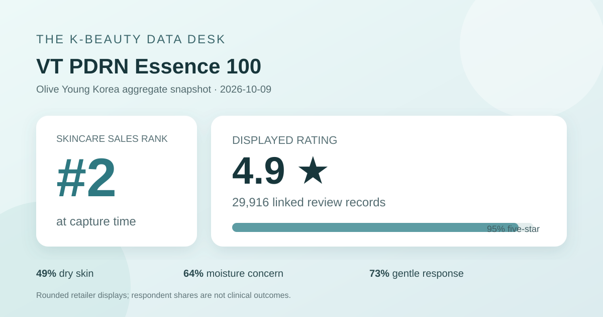
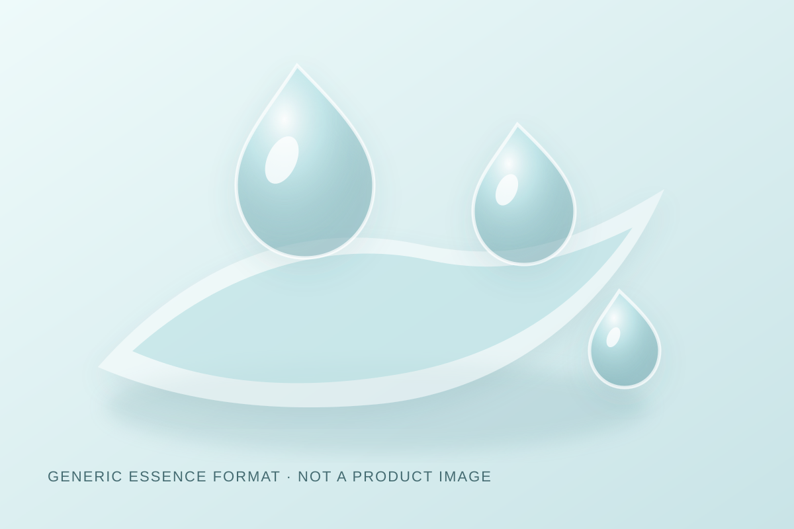

Data captured October 9, 2026. This is an independent analysis of retailer-displayed product information and anonymous aggregate review signals. I did not test the product, and no individual review, reviewer name, product photograph, or user photograph is copied, translated, or paraphrased.

The short version: VT PDRN Essence 100 appeared at number 2 in Olive Young Korea's live skincare sales ranking. The product header and detailed review view both displayed 4.9 out of 5 from 29,916 review records. Five-star ratings accounted for 95% of the shown distribution. Dry skin, moisture concern, and gentle were the leading responses in the three shopper polls.
A 4.9 average paired with 95% five-star ratings is a strongly favorable storefront signal, and 29,916 is a substantial displayed base. It is large enough that a small number of new ratings will have little effect on the rounded average. Matching figures in the header and detailed review view also reduce the risk that this article accidentally combines values from different listings.
Size does not remove selection bias. The retailer does not show how many purchasers declined to review, how invitations were delivered, whether incentives influenced participation, how long people used the essence, or whether every record relates to the currently promoted double set. Ratings also compress different priorities into one number. A buyer focused on finish, layering, price, packaging, or long-term use may judge the same listing differently. The justified conclusion is that the captured reviewer pool rated the listing very favorably—not that the product will produce the same experience for every buyer.
Zero-percent labels do not prove that no low rating exists. Whole-number display can round a small share to zero. The article therefore reports the storefront percentages exactly and does not convert them into invented rating counts.
Dry skin was the largest displayed response at 49%, but combination skin was close at 45%; oily skin accounted for 6%. The near split between dry and combination respondents is more informative than the leading label alone. It suggests that the captured pool was not dominated by only one of those two self-described skin types, while oily respondents were much less represented.
These shares describe who answered the poll, not how well the product performed for each group. The poll denominator was not displayed in the captured view and may differ from the 29,916 rating count because not every reviewer necessarily answers every question. Without that denominator or subgroup outcomes, the percentages cannot support a claim that the essence is better for dry skin or unsuitable for oily skin.
Moisture was the leading concern response at 64%, followed by soothing at 20% and wrinkle/brightening at 17%. The rounded total is 101%, which is normal for independently rounded whole-number shares. The result describes the concerns selected by respondents; it does not measure hydration, barrier function, redness, wrinkles, pigmentation, or brightness. People attracted to moisture-oriented merchandising may also be more likely to select the matching concern.
The irritation panel showed 73% gentle, 25% ordinary, and 3% felt irritation, again totaling 101% after rounding. This is a favorable perception pattern, but it is not a patch test, safety trial, or guarantee for sensitive skin. Formula tolerance can depend on quantity, frequency, concurrent products, recent procedures, allergies, barrier condition, climate, and individual history.

The listing identifies the item as an essence, which supports only a category-level description: it is sold as a leave-on liquid skincare format rather than as a cleanser, pad, or cream. I did not dispense, spread, smell, layer, or wear it. I therefore cannot responsibly describe the actual texture as watery, elastic, sticky, fast-absorbing, fragrance-free, makeup-friendly, or suitable for a season.
The local illustration uses translucent droplets and an aqua field to explain a generic essence concept without copying retailer photography, packaging, campaign art, or customer images. It is a visual abstraction, not a reconstruction. Its colors and flow are creative choices and should not be interpreted as observations about the product.
The retailer's automated recent-review summary labeled 92% of its summarized subset as positive. Its broad groupings concerned a luminous-looking finish, use alongside the bundled Reedle Shot product, and moisture or rich-feeling impressions. This article uses only those anonymous, retailer-generated aggregate categories. It does not copy, translate, or paraphrase any shopper's review.
That 92% belongs to a recent summarized subset, not necessarily all 29,916 records. Automated summaries can emphasize repeated language, miss nuance, and inherit bias from the reviews selected for processing. The themes are useful as navigation clues, but they are not measured outcomes. In particular, comments about pairing two items cannot isolate which product, routine step, or other factor shaped the experience.
“PDRN” and “100” appear in the retailer-displayed name. The title alone does not establish ingredient concentration, molecular specification, source, purity, delivery, absorption, or clinical effect. This analysis does not infer any amount from the name. Anyone comparing formulas should consult the current authorized ingredient label and market-specific product information for the exact item being purchased.
Product names also cannot establish medical equivalence with injected, prescription, procedural, or research uses of similarly named materials. A cosmetic retail listing and anonymous ratings do not demonstrate wound healing, tissue regeneration, treatment of inflammation, or another therapeutic result.
The captured heading described two 30 ml essence units plus a 10 ml Reedle Shot 100 addition. The page showed a ₩67,500 reference price and ₩35,200 promotional price. Gifts, coupons, stock, membership benefits, seller terms, and checkout price can change. The figures are a dated Korea-store snapshot, not a permanent value claim or a quote for another market.
Rank two means the listing occupied the second slot in the selected skincare sales list at capture time. It does not mean second best by effectiveness, safety, formula quality, review volume, or value. Promotion, bundle size, celebrity campaigns, merchandising, availability, season, and short-term demand can all affect placement.
The captured header and review detail both displayed 4.9 out of 5 from 29,916 records. The star panel showed 95% at five stars. That is favorable retail feedback, not proof of clinical effectiveness.
Dry skin led at 49%, followed closely by combination skin at 45%; oily skin represented 6%. Those are audience shares, not recommendations.
No. It is a retailer perception poll with an unspecified denominator and uncontrolled use conditions. Personal tolerance can differ, and the full current label matters.
No. The name does not establish amount, source, delivery, absorption, or therapeutic effect. This article does not estimate those details.
No. It is a local, brand-neutral graphic for a generic essence concept and makes no claim about the real product's appearance or behavior.
Source: Olive Young Korea product listing for the VT PDRN Essence 100 double set, accessed October 9, 2026. The source is a dynamic retail page; rank, price, availability, gifts, counts, percentages, and interface details can change after capture.
This independent article reports displayed aggregate information with explicit limits. It is not sponsored, is not medical advice, and does not replace the current product label or qualified care.
← All K-Beauty Data Desk reviews · Best-seller rankings · Skin-poll representation · About & methodology